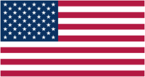

Flag Etiquette
Display and Treatment
Throughout the world, many countries have similar flag guidelines for proper display of national or state flags within their country. Although there is no international flag standard, many common practices are so similar that one can glean a general idea of appropriate flag etiquette for all countries. The United States has even codified a Flag Code located in Section 1, Title 4 of the United States Code (4 U.S.C § 1 et seq), first developed in the 1920's and is still ratified to this day.
Although there are no international flag standards amongst countries regarding their individual flags, there are a few standards that are of common practice when national flags are displayed during international conferences and meetings. When displayed amongst others, all national flags hoisted as a group should be the same width (see Proportions section within Designs page for additional information), located on separate flagpoles, at the same height, and in alphabetical order according to the official language of host country to give the proper respect and prominence to each nation.
Common observations gleaned for proper display and practices of flag within any respective country:
- Should be displayed in open area from sunrise to sunset, but only on days with clement weather or at night (if illuminated).
- Must always be held with high dignity and decency, one should never:
- Allow it touch ground or water.
- Use it as a drapery of any sort (i.e. table cover).
- Use to carry other objects in (i.e. some type of bindle).
- National flag takes precedence over all other flags.
- Flying flag at half-maste is a sign of mourning.
- Vertical display should have the flags upper edge be to the observer's left (canton in top left)
Common observations when flags displayed within international meetings/conferences:
Two flags displayed/crossed
National flag is on the left of observer, facing the staff. When crossed, national flag staff should be in front of other flag.
Line of three flags
National flag positioned in center.
Line of four flags
National flag should appear on observers left.
Line of five or more
National flag positioned at each end of the line.
Semi-circle
National flag located in center, opposite of the semi-circle opening.
Enclosed circle
National flag positioned opposite of main entrance.
Speaker platform
Flag should be located behind the speaker on their right, the audiences left.
* National flags are depicted in grey
Disposing of Flag
How to Dispose
Contrary to common belief, when a flag is no longer in a suitable condition for display or has been tarnished in some way it should be burned privately in a dignified manner. The burning of a flag only becomes a problem both legally and morally, if the individual conducting the act does so within the public domain. Public desecration is not illegal in countries such as the US and Canada but in many foreign nations can lead to imprisonment (in rare cases, resulting in over 10 year).
When disposing of a flag, make sure to first fold the flag in a customary manner (see below) and check that the fire is sufficiently large enough, for complete disintegration of the flag. When finished make sure to safely extinguish the fire.
Folding US Flag
Step-by-Step Guide to Fold US Flag:
-
Straighten US flag to full length and fold lengthwise across the hoist once.

-
Fold lengthwise across the hoist again with the blue canton of stars
remaining outward and in view.

-
Start a triangular fold by bringing striped corner of folded edge to open edge.
-
Second triangle fold will have you turn the outer point inward
toward the canton and parallel with open edge.
-
Continue the process of step 3 and 4 until you reach the end of the flag.
-
Once end reached, tuck the end opposite of folded portion into the fold,
to cover any exposed sections of red.
Comments and Questions
Leave Your Comments and/or Questions Below
Fields marked with * are required for submission.